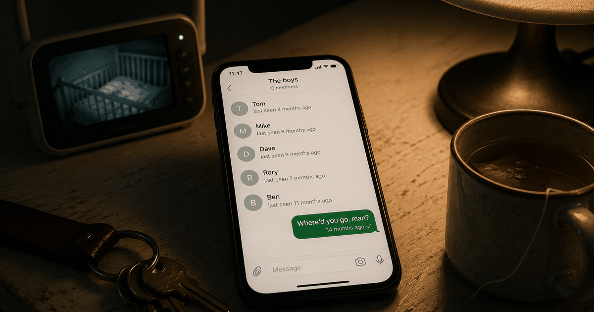

 VN
VNA note from Vadim — A year into being a dad I realised I hadn't seen a single friend in months and hadn't noticed it go. This one's for the guys who look up one day and find the group chat gone quiet. Why trust us.
Most new dads quietly lose their friends in the first year — not through any single decision, just through exhaustion and logistics — and it isn't harmless. A 2025 study of 885 fathers found that low perceived social support at 14 months predicted more depression and anger/hostility a full year later, and that having people around you buffered the mental-health hit of a hard season. If your circle has gone silent since the baby, you're not slipping as a person. You're missing the thing that protects you.
Where your friends actually go
Your friends don't leave — the hours to see them do, one skipped plan at a time. In the weeks before the baby you're already tired and preoccupied, so you skip a couple of nights out; reasonable. Months one to three are pure survival, so you're not going anywhere and the ones who don't have kids quietly stop texting. By month six the acute emergency is over but the routine has locked in: baby, work, sleep, repeat. The social life didn't blow up. It just stopped fitting, and no one warns you that "stopped fitting" and "gone" end up in the same place.
The trap is that it feels temporary the whole way down. Every dad tells himself he'll reconnect "once things calm down" — but things don't calm down, they just change shape, and a year later the number of people he'd text on a bad night has quietly dropped to zero.
What the research found
A 2025 study of 885 fathers found that thin social support in the first year predicts worse mental health in the second — this isn't just an uncomfortable feeling, it's a measurable risk. Researchers followed fathers from the German DREAM cohort at two points, 14 months and two years postpartum, measuring perceived social support and symptoms of depression and anger/hostility. Fathers who felt low on support at 14 months reported more depression and more anger/hostility at year two.
Kümpfel, Weise, Mack & Garthus-Niegel (2025). "Parental relationship satisfaction, symptoms of depression and anger/hostility, and the moderating role of perceived social support." Frontiers in Psychology, 16, 1470241. DREAM cohort, n = 885 fathers. Read the paper · DOI 10.3389/fpsyg.2025.1470241
There's a second finding that's easy to miss and matters most. Social support didn't only predict better mental health on its own — for fathers it moderated the effect of a strained relationship on their symptoms. In plain terms: when the home front was hard, the dads who still had people around them took less of a mental-health hit than the dads carrying it alone. The friendships weren't a nice-to-have running parallel to the real problem. They were the shock absorber.
Why it hits dads as anger, not just sadness
For fathers, isolation often shows up as irritability and a shorter fuse rather than obvious sadness — which is exactly why it gets missed. The study tracked anger/hostility alongside depression on purpose, because that's how paternal distress tends to surface: not tears, but a partner saying "you've gotten meaner." Numbness and detachment sit underneath it. When there's no outlet and no one who gets it, the strain of the year has nowhere to go except back into the house.
This is a different problem from the one we cover in new-dad loneliness at home — that piece is about feeling like a third wheel beside your own partner and finding your way back to her. This one is about the outer ring: the friends, the mates, the social contacts that vanish in year one, and what their absence does to your head. The two overlap, but the fix isn't the same. Losing your partner's closeness and losing your whole support network are separate wounds, and men in the first year often have both at once without naming either.
What erodes dad friendships — and the one thing that rebuilds them
Friendships erode through drift, not conflict — and they rebuild through one small, repeated contact, not a grand reunion. You don't need to reassemble your old life. You need enough real support that you're not metabolising the whole year alone. Here's the pattern the research and the lived experience both point to:
| What quietly erodes dad friendships | The one small thing that rebuilds them |
|---|---|
| Survival mode: every spare hour goes to the baby, work and sleep | One honest text to one friend — "First year's harder than I expected" is a complete message |
| "I'll reconnect once things calm down" (they don't) | A standing, low-effort thread — a dads' group, r/daddit, a weekly walk that needs no planning |
| Believing a good dad handles it alone | Letting one person know you're struggling — perceived support is what buffers the damage |
What actually helps
Aim for small, repeatable contact rather than a full social rebuild — even one or two consistent people measurably softens the mental-health toll. A few moves that work in year one:
- Text one person, honestly. Not the group chat — one person. "First year's harder than I thought." Most old friends answer that, and answering is the whole point.
- Find a dads' space that meets you where you are. r/daddit is a real one — anonymous, imperfect, awake at 3am with you. Just reading can take the edge off the "only me" feeling.
- Say the quiet part to your partner. Not to add to her load, but because naming it out loud takes it out of your head — and if you're not sure how, here's how to open that conversation without guilt.
- Watch the drift, not just the crisis. If the low mood, irritability or detachment stick around most days, that can be paternal depression, and it's worth a doctor — the pattern where dads wait far too long to ask for help is exactly the one to break early.
Not sure where you're at? Our quick new-dad mental-health check is a two-minute, private way to see whether what you're feeling is the ordinary weight of the season or worth taking to someone.
The reframe that helps most: you're not getting harder to be around because something's wrong with you. You're carrying something heavy with no one to hand a corner of it to. The fix isn't fixing yourself. It's letting one or two people back in.
Frequently asked questions
Is it normal for new dads to lose their friends after having a baby?
Yes, it is extremely common. Most men report a real drop in social contact in the first year of fatherhood — between work, the baby and sleep, seeing friends is usually the first thing to fall away. It is not a character flaw; it is what happens when there are only so many hours.
Does having no friends actually affect a new dad's mental health?
Yes. A 2025 study of 885 fathers from the German DREAM cohort (Kümpfel, Weise, Mack & Garthus-Niegel, Frontiers in Psychology, DOI 10.3389/fpsyg.2025.1470241) found that low perceived social support at 14 months postpartum predicted more symptoms of depression and anger/hostility at two years. Social support also buffered — moderated — the mental-health impact of a strained relationship.
Why do new dads become so isolated in the first year?
Several things stack up at once: the sheer logistics of a newborn, pressure to keep earning, exhaustion, and social norms that make it hard for men to say "I'm struggling." Friendships take effort to maintain, and effort is the one thing new dads have none of to spare, so the social circle quietly thins.
What can a new dad do if he feels isolated and has no friends?
Aim for small, repeatable contact rather than rebuilding a whole social life. The research suggests even a little perceived support buffers the mental-health toll. Send one honest text to one old friend, find a dads' community (r/daddit is a real one), and let one person know you're struggling — that alone changes the trajectory.
How long does new-dad isolation usually last?
For most fathers, the most acute isolation lands in the first 6 to 14 months and eases as the baby becomes more interactive and routines settle. The 2025 Frontiers in Psychology study tracked fathers to two years and pointed to the 14-month mark as a window worth watching: support at that point predicted mental-health outcomes a year later.
Keep readingLonely as a new dad? Why it happens and what helps · Why dads seek help too late · New-dad mental-health check (2 min)
Contributing editor at Regular, and a dad himself. Writes the honest, from-a-dad's-side pieces on closeness, sex and the messy first year.
About Regular — the relationship app for new dads, built by a small team of parents who needed it themselves. Small, science-backed moves with your partner, not big talks.